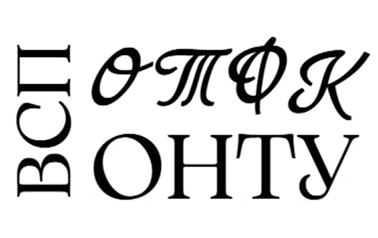

Методичний кабінет – це структурний підрозділ навчального закладу, який є центром методичної роботи з викладачами та цикловими комісіями. Його основна мета – забезпечення якісної методичної підтримки педагогічних працівників, удосконалення їхньої професійної майстерності та сприяння підвищенню ефективності навчального процесу.
Основні функції методичного кабінету:
- Консультаційна допомога – підтримка викладачів у питаннях педагогіки, організації освітнього процесу.
- Атестаційний супровід – допомога у підготовці та проходженні атестації педагогічних працівників.
- Систематизація методичних матеріалів – збирання, упорядкування та поширення сучасних методичних напрацювань.
- Підвищення кваліфікації – організація семінарів, тренінгів, майстер-класів, обмін досвідом.
- Інформаційно-ресурсне забезпечення – надання доступу до нормативних документів, навчально-методичних розробок, освітніх новинок.
Таким чином, методичний кабінет виконує роль координаційного центру, що допомагає педагогам підвищувати якість освіти та впроваджувати інноваційні методики у навчальний процес.
Пошта “Методичного кабінету”:
metod-otfkua@ukr.net
metod-otfkua@ukr.net
Зав. НМК ЗЯО - Коваленко Анаталій Володимирович
тел. (067) 791 - 39 - 52
тел. (067) 791 - 39 - 52
Методист НМК ЗЯО - Уманська Валентина Іванівна
тел. (067) 289 - 98 - 95
тел. (067) 289 - 98 - 95
Методист НМК ЗЯО - Каушан Римма Василівна
тел. (096) 002 - 50 - 27
тел. (096) 002 - 50 - 27
Офіційний службовець НМК ЗЯО - Шушман Анастасія Вікторівна
тел. (050) 904 - 58 - 48
тел. (050) 904 - 58 - 48
Відокремлений структурний підрозділ
“Одеський технічний фаховий коледж
Одеського національного технологічного
університету”
